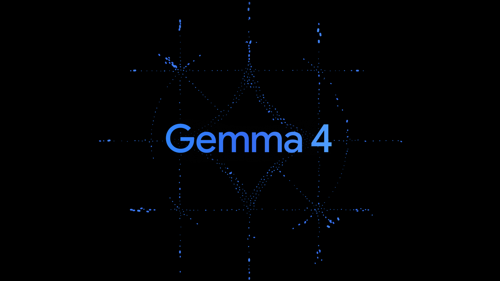
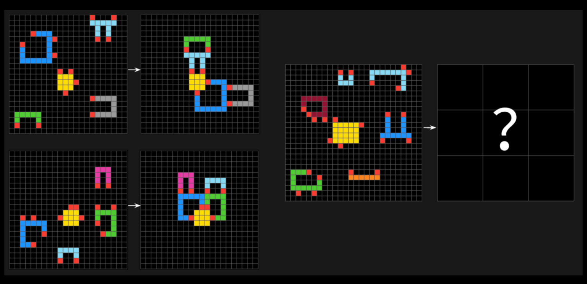
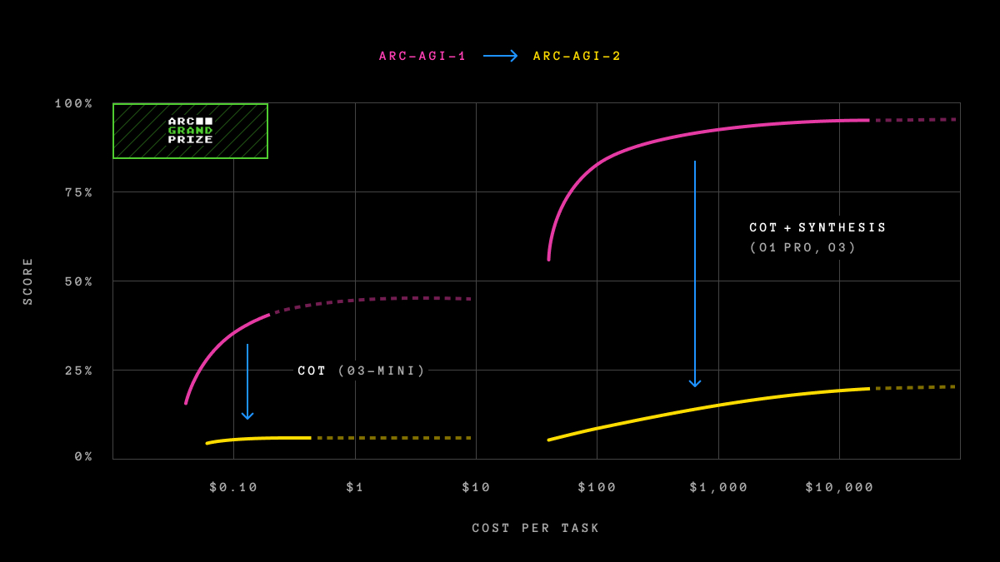

AI Roundup: Week 3#
Stories from the week of March 31 – April 4, 2026.
Google Releases Gemma 4 Under Apache 2.0#
{kind=link}

Source: Google Blog
Google released Gemma 4 — four new open-weights models built from Gemini 3 research — and the headline isn’t the models themselves, it’s the license. Gemma 4 ships under a real Apache 2.0 license: no custom restrictions, no “open weights but don’t compete with us” clauses. You can fine-tune, modify, and deploy commercially with no strings attached. Previous Gemma licenses were restrictive enough that many practitioners chose Llama or Qwen instead; this puts Google on equal terms with the most permissive open providers.
The family has two tiers: workstation models (a 31B dense and a 26B MoE with ~4B active parameters, 256K context) and edge models (E2B and E4B, small enough for phones and Raspberry Pis, 128K context, with native audio support). What sets Gemma 4 apart from previous open models is that vision, audio, reasoning, and function calling are all built in at the architecture level — not bolted on. Function calling is baked in from scratch for multi-turn agentic flows, not achieved by coaxing better instruction following out of the model.
For finance, the Apache 2.0 license means Gemma 4 can be deployed on proprietary infrastructure where data cannot leave the firm. The edge models make it feasible to run a capable multimodal model entirely on-device with no cloud dependency. Read more → | YouTube walkthrough →
ARC-AGI: Benchmarking Real Intelligence#
The Arc Prize Foundation, co-founded by AI researcher François Chollet, has been pushing the field to confront a hard question: can AI models actually generalize, or are they just pattern-matching against training data? Their ARC-AGI benchmarks — puzzle-like problems where an AI must identify visual patterns from colored grids and produce the correct answer — are designed to force genuine adaptation to novel problems.
ARC-AGI-2: Efficiency as Intelligence#
In March 2025, the Foundation released ARC-AGI-2, which stumped virtually every frontier model. Reasoning models like OpenAI’s o1-pro and DeepSeek’s R1 scored between 1% and 1.3%. Non-reasoning models — GPT-4.5, Claude 3.7 Sonnet, Gemini 2.0 Flash — scored around 1%. Humans averaged 60%.
{kind=link}

A sample ARC-AGI-2 question. The model must identify the visual pattern from the example input-output pairs (left) and produce the correct answer grid (right). Source: Arc Prize Foundation
{kind=link}

Frontier AI model scores on ARC-AGI-1 vs. ARC-AGI-2. Models that scored well on ARC-AGI-1 by throwing compute at the problem saw dramatic drops on ARC-AGI-2. Source: Arc Prize Foundation
The key innovation in ARC-AGI-2 is measuring efficiency — not just whether a model can solve a task, but at what cost. ARC-AGI-1 was unbeaten for five years until OpenAI’s o3 matched human performance in December 2024, but only by spending roughly $200 worth of compute per task. That same o3 model scored just 4% on ARC-AGI-2. As co-founder Greg Kamradt put it: “The core question being asked is not just, ‘Can AI acquire the skill to solve a task?’ but also, ‘At what efficiency or cost?’”
ARC-AGI-3: Fully Interactive#
ARC-AGI-3, released in 2026, goes further still. It is the first fully interactive AI benchmark — instead of handing the model a prompt and grading the response, it drops the AI into turn-based environments with no instructions. The model must explore, form hypotheses, and act. The results are stark: humans score 100%, while Gemini 2.5 Pro manages 0.37%, Claude scores 0.25%, and Grok scores 0%. Over $2M in prizes are available for teams that make progress.
The ARC-AGI series is a useful reality check on the “AGI is here” narrative. Each iteration targets exactly the kind of open-ended reasoning that can’t be solved by scaling existing architectures. ARC-AGI-2 announcement → | ARC-AGI-3 launch →
Claude Code Source Leak: What We Learned#
A missing .npmignore entry caused ~512,000 lines of Claude Code’s TypeScript source to ship publicly via npm, revealing that the product’s real advantage isn’t the model but the agentic harness: a production orchestration engine with 40+ permission-gated tools, a mailbox pattern for safe multi-agent coordination, and a two-stage auto-approval classifier that prevents prompt injection from influencing permission decisions. The leak also exposed a file-based memory system behind an unreleased feature called KAIROS, designed to “have a complete picture of who the user is, how they’d like to collaborate with you, what behaviors to avoid or repeat, and the context behind the work the user gives you.” To consolidate this memory across sessions, an AutoDream system activates when the user goes idle, telling Claude Code that “you are performing a dream, a reflective pass over your memory files” in which it scans transcripts for new information, prunes outdated or duplicate memories, and watches for “existing memories that drifted.” The takeaway, as one widely-cited analysis put it: “Drop DeepSeek or Gemini into the same harness and you may get improved coding ability”; the harness is the moat, not the model.